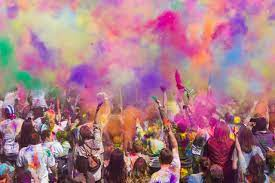
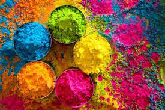
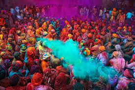
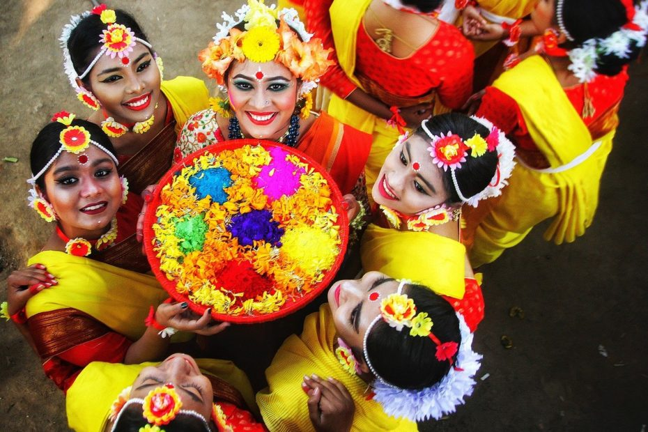

|  |
Holi is a popular ancient Indian festival, also known as the "Festival of Love", the "Festival of Colours", and the "Festival of Spring".[1][8][9] The festival celebrates the eternal and divine love of Radha Krishna.[10][11] It also signifies the triumph of good over the evil,[12][13] as it celebrates the victory of Lord Vishnu as Narasimha Narayana over Hiranyakashipu.[14][15] It originated and is predominantly celebrated in India and Nepal but has also spread to other regions of Asia and parts of the Western world through the diaspora from the Indian subcontinent. Holi celebrates the arrival of spring, the end of winter, the blossoming of love and for many, it is a festive day to meet others, play and laugh, forget and forgive, and repair broken relationships. |
Holi is an ancient Indian religious festival that has also become popular outside of India.[16] In addition to India and Nepal, the festival is celebrated by Indian subcontinent diaspora in countries such as Suriname, Guyana, Trinidad and Tobago, Jamaica, South Africa, Mauritius, Fiji, Malaysia,[23] Singapore, the United Kingdom, the United States, the Netherlands, Canada, Australia, and New Zealand.[8][24] In recent years, the festival has spread to parts of Europe and North America as a spring celebration of love, frolic, and colours. |
 |
|  |
Holi celebrations start on the night before Holi with a Holika Dahan where people gather, perform religious rituals in front of the bonfire, and pray that their internal evil be destroyed the way Holika, the sister of the demon king Hiranyakashipu, was killed in the fire. The next morning is celebrated as Rangwali Holi (Dhuleti) – a free-for-all festival of colours,[16] where people smear each other with colours and drench each other. Water guns and water-filled balloons are also used to play and colour each other. Anyone and everyone is fair game, friend or stranger, rich or poor, man or woman, children, and elders. The frolic and fight with colours occurs in the open streets, parks, outside temples and buildings. Groups carry drums and other musical instruments, go from place to place, sing and dance. People visit family, friends and foes come together to throw coloured powders on each other, laugh and gossip, then share Holi delicacies, food and drinks |
The Holi festival is an ancient Hindu festival with its cultural rituals. It is mentioned in the Puranas, Dasakumara Charita, and by the poet Kālidāsa during the 4th century reign of Chandragupta II.[8] The celebration of Holi is also mentioned in the 7th-century Sanskrit drama Ratnavali.[56] The festival of Holi caught the fascination of European traders and British colonial staff by the 17th century. Various old editions of Oxford English Dictionary mention it, but with varying, phonetically derived spellings: Houly (1687), Hooly (1698), Huli (1789), Hohlee (1809), Hoolee (1825), and Holi in editions published after 1910. |
 |